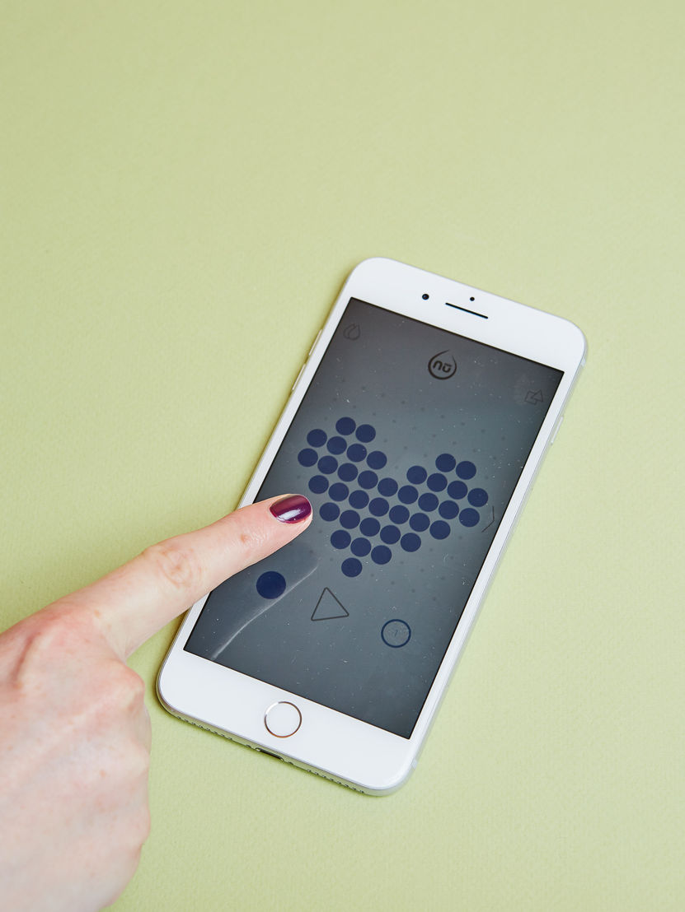
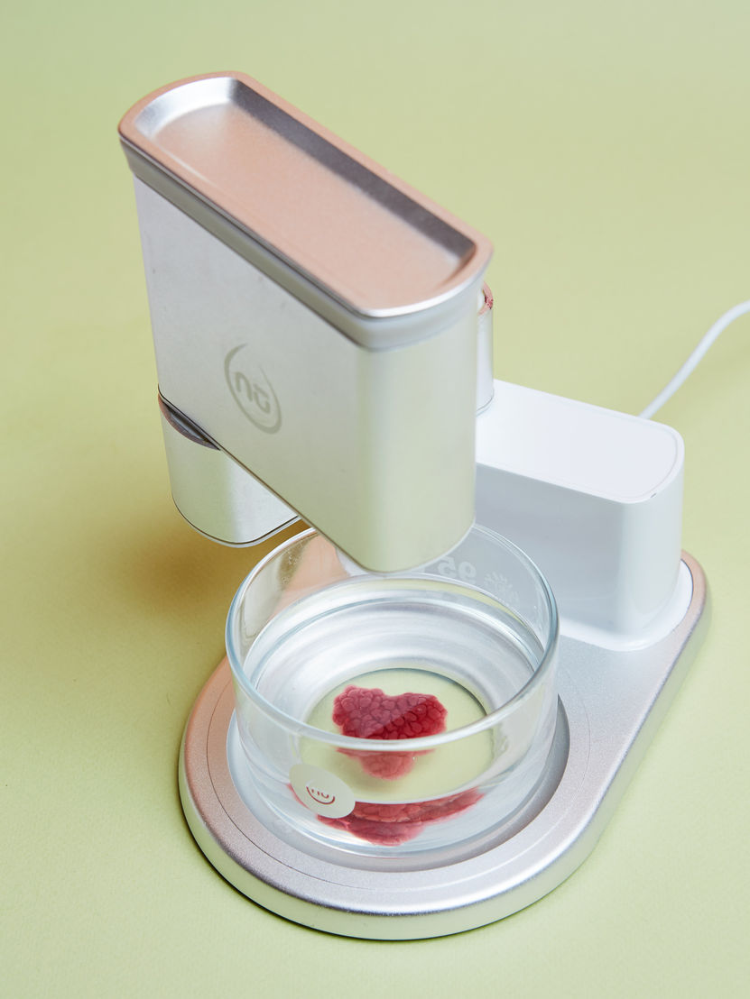
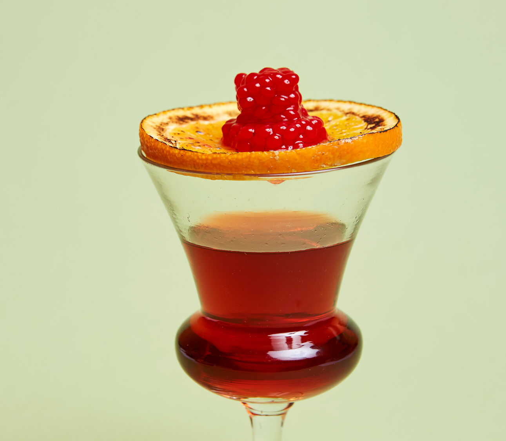
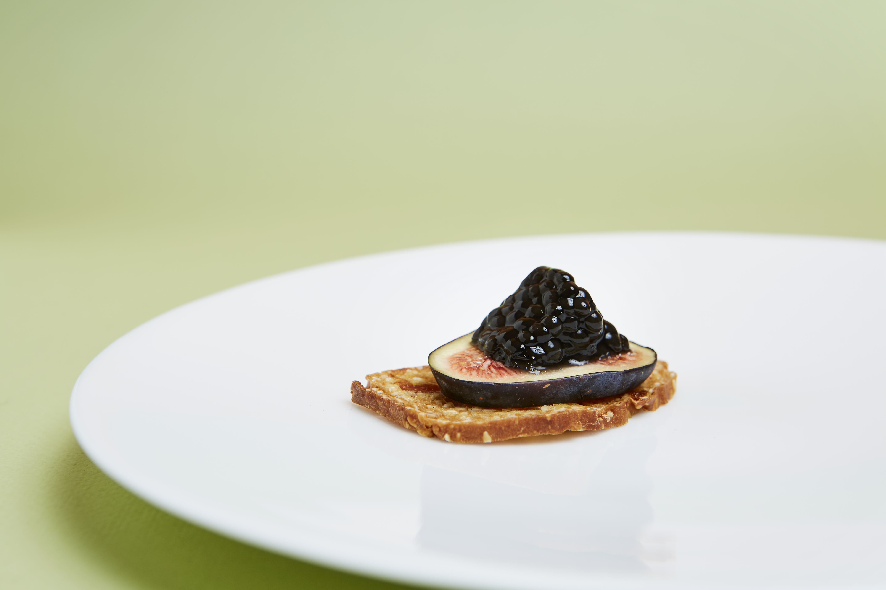
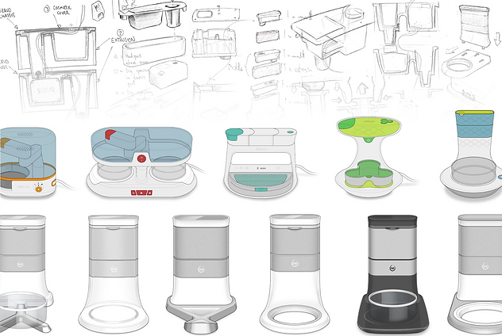

Designing the World's First Edible Raspberry 3D Printer




Food has always been limited by the form of its ingredients
A raspberry looks like a raspberry. A blueberry tastes like a blueberry. For as long as food has existed, appearance and flavour have been inseparable - constrained by what grows, what ferments, what blends. The idea that you could decouple the two - that something could look completely different from what it tastes like, or that you could 3D print a flavour - didn't exist in a home kitchen context.
At the same time, cooking had become increasingly passive. People consumed more and created less. The playfulness and experimentation that characterised great cuisine were locked away in professional kitchens, inaccessible to anyone without formal training or industrial equipment.
The design challenge was to change that - to invent a product category that didn't exist, build the technology to make it possible, and design an experience simple enough for anyone to use at home. Not a professional tool. Not a novelty gadget. Something genuinely new.
Founder, CEO, and Inventor of an entirely new product category
I founded Dovetailed, the Cambridge-based design studio and innovation lab that created nūfood, and as CEO and Inventor led the project from a single concept at a food hackathon to a working product exhibited across Europe. My role spanned the full product - from inventing the core technology and directing industrial design, to designing the mobile app and crafting the brand and dining experiences that brought the product to life publicly.
The idea originated from a food-centred hackathon I organised, bringing together UX designers, technologists, and gastronomical experts. From that collision of disciplines, the concept of 3D printed flavour emerged as the most compelling direction. I led and directed a team of 15 spanning UX and industrial designers, software and hardware engineers, food scientists, and business development - taking the product from concept to market over the following two years.
Alongside building the product, I created a series of sold-out pop-up dining experiences across Cambridge and London, using them not just as public events but as primary research environments - observing how people interacted with the printer, understanding what drew them in, and using those insights to shape every subsequent iteration of the product and app.
Inventing berrification - 3D printing with liquid ingredients
Every existing food 3D printer at the time worked with composite pastes and extrusion - essentially a sophisticated piping bag. They could reshape food but not reinvent it. To print with raw liquid ingredients - fruit juice, edible oils, liquid flavour extracts - required a completely different approach.
We invented a patented process - awarded in the USA, UK, France, and Germany - we called berrification, inspired by the modernist cooking technique of spherification. Liquid ingredients mixed with sodium alginate are deposited layer by layer into a cold calcium chloride solution. The chemical reaction forms a paper-thin membrane around each drop, encapsulating the liquid inside a delicate, edible sphere. These spheres are assembled into three-dimensional structures - flavour bombs that hold their shape until they burst in the mouth.
The most important discovery in the development process was about authenticity. Pure raspberry juice, when encapsulated, didn't taste like a raspberry. The flavour fell flat. After extensive experimentation, we found that the authentic raspberry taste required a combination of raspberry juice and balsamic vinegar - a formula that would never have been intuitive. This insight shaped our entire approach to the ink system: flavour accuracy required chemistry, not just ingredients.


Three design challenges that shaped the product
The printer had to be kitchen-worthy - compact, beautiful, and approachable. Not a machine. Something that belonged on a worktop alongside the things people already loved.
3D design is intimidating. The app had to make designing edible shapes feel as simple as drawing - with a visual grid, pre-made templates, and flavour selection that felt more like browsing than configuring.
Flavour inks needed to feel premium and considered - not cartridges. Small glass bottles with precise formulas, each a collaboration between food science and taste. The packaging was part of the experience.
Making 3D food design feel like play
The mobile app was the primary interaction surface - the place where users designed their flavour creations before sending them to print. The core design challenge was abstracting 3D design into something that felt completely natural for a home cook with no technical background.
The shape designer used a simple dot grid where users tapped to fill a pattern, building up their creation layer by layer in an intuitive visual language. Pre-made templates - small pearl, layer cake, sphere - gave new users an immediate starting point. A flavour library presented each ink with a photograph and a short description of its taste profile and pairing suggestions, framing the experience around food culture rather than technology. The printer could hold two flavour inks simultaneously, enabling two-flavour creations from a single print run.

What made nūfood feel like a genuinely new thing
Decoupling appearance from flavour
The radical design premise was that what something looks like and what it tastes like are independent variables. A blue cube can taste of raspberry. A translucent sphere can taste of fig. This wasn't a gimmick - it was the foundation of a new culinary language. Every product decision reinforced it: the shape designer and flavour selector were separate, deliberate steps in the app, making the decoupling an explicit creative act rather than an incidental outcome.
Flavour as a material
Positioning the flavour inks as premium consumables - small glass bottles with curated formulas - shifted the product's cultural register. This wasn't cooking equipment. It was closer to a palette of materials for edible design. The packaging language, the flavour descriptions, the pairing notes in the app: all reinforced the idea that flavour could be chosen, combined, and applied with the intentionality of a design medium.
Pop-ups as research
The sold-out dining events in Cambridge and London served a dual purpose. Publicly, they were experiences - five-course 3D printed meals, cocktail garnishes, edible art. Privately, they were the most valuable user research available. Watching how people approached the printer for the first time, what surprised them, what delighted them, and where they hesitated directly informed the hardware ergonomics, the app flow, and the flavour introductions we prioritised for the Kickstarter campaign.
Playfulness as the product
nūfood was not designed to replace cooking. It was designed to add something cooking couldn't offer: a kind of edible playfulness - the ability to create something that surprises, that prompts a double-take, that makes a meal into a small spectacle. Every design decision was evaluated against this: does it feel joyful? Does it invite experimentation? Does it make the person using it feel like they made something genuinely extraordinary?

A new product category, recognised globally
- Winner, Smart Kitchen Startup Showcase - Seattle, USA (2016)
- Edison Award nomination for design and business innovation
- Red Dot Award recognition
- Featured in 3D Printing Industry, Digital Trends, The Spoon, IBTimes UK, Food Science and Technology journal
- Sold-out pop-up dining events in Cambridge and London - tickets at £200 per pair
- Kickstarter campaign tour across 10 European cities including Paris, London, Vienna, Helsinki, Berlin, Amsterdam, Copenhagen, and Vilnius
- Eat Cambridge Food Festival five-course 3D printed meal
- World's first food 3D printer to work with raw liquid ingredients rather than composite pastes
- Patented berrification technology for edible liquid encapsulation - patents awarded in the USA, UK, France, and Germany
- Available in four AWS regions at launch - designed for home kitchens at approximately £500-600
- Initial flavour library including raspberry, strawberry, soya, wasabi, lychee, vanilla, and coffee
How the world described nūfood
"You can use raw ingredients to produce strawberries with cream in the middle. We don't think that is as interesting as creating new shapes and tastes, like an orange made from raspberry juice."
"Our approach is to introduce playfulness back into the kitchen, adding interesting flavours to everyday meals. The level of skill expected to model something is very complex, which is why we've made our software really easy to use for everyone from children to grandparents."
"The nūfood printer allows you to print something that has the exact delicious flavour of a raspberry but design it in a way that is far from its natural form - making it blue and in the shape of a cube."
"Nufood allows backers to experience a new type of dining by offering a pop-up restaurant serving 3D-printed dishes."
What building a new product category taught me about design
Inventing something that doesn't exist yet is a different kind of design challenge. There are no comparable products to benchmark against, no existing mental models to build on, no user expectations to meet or subvert. You have to construct the entire framework - the technology, the language, the cultural context - from scratch. That is both the hardest and the most interesting version of design work.
The most important thing I learned was that the product experience extended far beyond the hardware. The flavour inks, the app, the dining events, the way we described each flavour in the library - all of it was the product. None of it was peripheral. A 3D printer that came with generic cartridges and a functional app would have been a curiosity. The combination of beautiful materials, a joyful interface, and experiences that let people taste what it could do turned it into something that felt genuinely worth wanting.
The pop-up dinners were the most valuable investment we made. Direct, repeated contact with real people encountering the product for the first time revealed things that no user interview or prototype test could have surfaced - the exact moment of surprise, the instinct to share, the question of what to pair it with. Building a new product category means building the audience for it at the same time. You cannot separate the two.